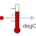

TemperatureSensorAbsolute temperature sensor in degCelsius |

|
Information
This information is part of the Modelica Standard Library maintained by the Modelica Association.
This is an ideal absolute temperature sensor which returns the temperature of the connected port in Celsius as an output signal. The sensor itself has no thermal interaction with whatever it is connected to. Furthermore, no thermocouple-like lags are associated with this sensor model.
Connectors (2)
| T |
Type: RealOutput Description: Absolute temperature in degree Celsius as output signal |
|
|---|---|---|
| port |
Type: HeatPort_a |
Used in Examples (3)
|
Modelica.Thermal.HeatTransfer.Examples
Simple conduction demo |
|
|
Modelica.Thermal.HeatTransfer.Examples
Control temperature of a resistor |
|
|
Modelica.Thermal.HeatTransfer.Examples
Second order thermal model of a motor |